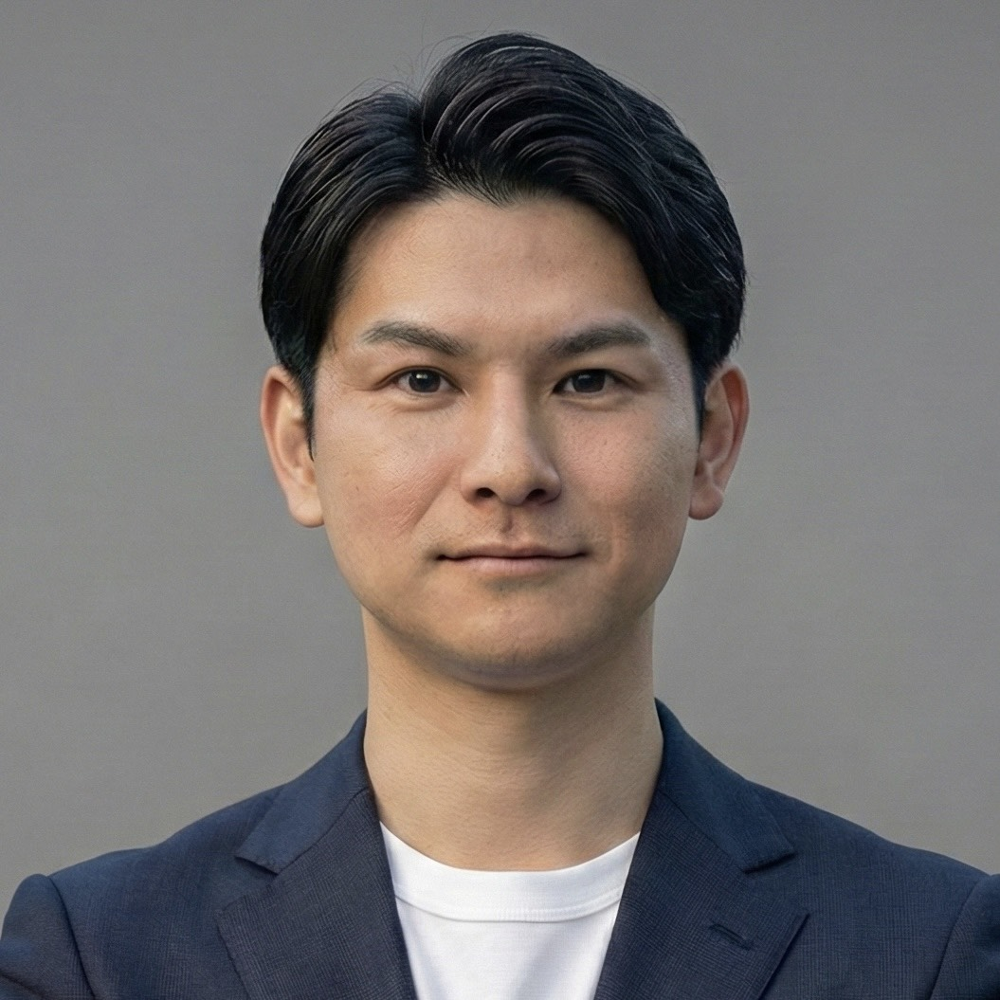

<!DOCTYPE html>
<html lang="ja">
<head>
<meta charset="UTF-8">
<meta name="viewport" content="width=device-width, initial-scale=1.0">
<title>AlumNET株式会社 | RPO・アルムナイ採用支援で採用と退職後を一気通貫で設計する</title>
<meta name="description" content="AlumNETは、RPO（採用代行）とアルムナイ・タレントプール構築運用の2本柱で、採用から退職後まで一気通貫で支援するHR戦略パートナーです。大手HR出身150名のプロフェッショナルとAIが伴走します。">

<!-- OGP -->
<meta property="og:title" content="AlumNET | RPO×アルムナイで、採用と退職後を一気通貫で支援">
<meta property="og:description" content="採用を、仕組みに。退職を、資産に。大手HR出身150名のプロとAIが、RPO・CHRO代行・アルムナイ・タレントプール構築運用を一気通貫で支援します。">
<meta property="og:type" content="website">
<meta property="og:url" content="https://alum-net.jp/">
<meta property="og:site_name" content="AlumNET株式会社">
<meta property="og:locale" content="ja_JP">
<meta property="og:image" content="https://alum-net.jp/assets/alumnet-logo-square-512.png">
<meta property="og:image:width" content="512">
<meta property="og:image:height" content="512">

<!-- Twitter Card -->
<meta name="twitter:card" content="summary">
<meta name="twitter:site" content="@AlumnetCeo">
<meta name="twitter:title" content="AlumNET | RPO・アルムナイ採用支援">
<meta name="twitter:description" content="採用を、仕組みに。退職を、資産に。大手HR出身150名のプロが伴走する。">
<meta name="twitter:image" content="https://alum-net.jp/assets/alumnet-logo-square-512.png">

<!-- Favicon -->
<link rel="icon" type="image/png" href="assets/alumnet-logo-square-512.png">
<link rel="apple-touch-icon" href="assets/alumnet-logo-square-512.png">

<!-- Canonical -->
<link rel="canonical" href="https://alum-net.jp/">

<!-- JSON-LD -->
<script type="application/ld+json">
{
  "@context": "https://schema.org",
  "@type": "Organization",
  "name": "AlumNET株式会社",
  "url": "https://alum-net.jp/",
  "description": "RPO・アルムナイ/タレントプール構築運用・CHRO代行・HRTech導入支援",
  "founder": { "@type": "Person", "name": "宅和奈帆子" },
  "foundingDate": "2025-06",
  "address": {
    "@type": "PostalAddress",
    "streetAddress": "北青山1丁目3番1号 アールキューブ青山3階",
    "addressLocality": "港区",
    "addressRegion": "東京都",
    "addressCountry": "JP"
  },
  "sameAs": ["https://x.com/AlumnetCeo"]
}
</script>

<link rel="preconnect" href="https://fonts.googleapis.com">
<link rel="preconnect" href="https://fonts.gstatic.com" crossorigin>
<link href="https://fonts.googleapis.com/css2?family=Zen+Kaku+Gothic+New:wght@400;500;700;900&display=swap" rel="stylesheet">
<link rel="stylesheet" href="assets/site.css?v=20260924a">
</head>
<body>


<!-- icon sprite: 使い回すインラインSVGはsymbol化して1箇所にまとめる（コピペ反復を避ける） -->
<svg width="0" height="0" style="position:absolute" aria-hidden="true">
  <symbol id="icon-check" viewBox="0 0 16 16">
    <path d="M3 8l3.5 3.5 6.5-7" stroke="#0E7A70" stroke-width="2" fill="none" stroke-linecap="round" stroke-linejoin="round"/>
  </symbol>
</svg>

<header>
  <div class="nav-inner">
    <div class="logo"><svg class="logo-icon" viewBox="0 0 44 34" xmlns="http://www.w3.org/2000/svg" aria-hidden="true" focusable="false"><circle cx="12" cy="20" r="5" fill="#2EC4B6"/><circle cx="26" cy="10" r="3.5" fill="#4EDDD0"/><circle cx="30" cy="28" r="4" fill="#1A9E93"/><circle cx="40" cy="18" r="2.5" fill="#2EC4B6" opacity="0.6"/><line x1="12" y1="20" x2="26" y2="10" stroke="#2EC4B6" stroke-width="1.2" opacity="0.5"/><line x1="12" y1="20" x2="30" y2="28" stroke="#1A9E93" stroke-width="1.2" opacity="0.5"/><line x1="26" y1="10" x2="40" y2="18" stroke="#2EC4B6" stroke-width="1" opacity="0.4"/><line x1="30" y1="28" x2="40" y2="18" stroke="#1A9E93" stroke-width="1" opacity="0.4"/></svg>Alum<span>NET</span></div>
    <nav><ul>
      <li><a href="#services">サービス</a></li>
      <li><a href="#alumni">アルムナイ</a></li>
      <li><a href="#results">実績</a></li>
      <li><a href="#faq">FAQ</a></li>
    </ul></nav>
    <div class="nav-actions">
      <a href="contact.html" class="nav-cta">無料相談を予約</a>
      <button type="button" class="nav-toggle" id="navToggle" aria-label="メニューを開く" aria-expanded="false" aria-controls="navPanel">
        <span class="nav-toggle-bar"></span>
        <span class="nav-toggle-bar"></span>
        <span class="nav-toggle-bar"></span>
      </button>
    </div>
  </div>
  <!-- モバイルナビ（768px未満。nav ul が消える幅の受け皿） -->
  <div class="nav-panel" id="navPanel">
    <a href="#services">サービス</a>
    <a href="#alumni">アルムナイ</a>
    <a href="#results">実績</a>
    <a href="#faq">FAQ</a>
    <a href="contact.html" class="btn-primary nav-panel-cta">30分の無料相談を予約する &rarr;</a>
  </div>
</header>

<!-- ============ 1. HERO ============ -->
<section class="hero">
  <div class="hero-grid">
    <div>
      <div class="hero-eyebrow">RPO | アルムナイ・タレントプール | AI採用</div>
      <h1>採用を、仕組みに。<br>退職を、資産に。</h1>
      <p class="hero-sub">エージェント依存から脱却し、自走する採用組織へ。</p>
      <p class="hero-desc">大手HR出身150名のプロとAIが、採用の実行から退職者・辞退者との関係資産（タレントプール）の運用まで一気通貫で支援。最短1週間で稼働開始。</p>
      <div class="cta-row">
        <a href="contact.html" class="btn-primary">30分の無料相談を予約する →</a>
        <a href="https://alumnet-sales-slides.vercel.app/" target="_blank" rel="noopener noreferrer" class="btn-secondary">会社紹介資料を見る →</a>
      </div>
    </div>
    <div class="hero-list">
      <div class="hero-list-item">
        <div class="hero-list-tag">RPO</div>
        <div class="hero-list-title">採用計画〜クロージング</div>
        <div class="hero-list-sub">採用計画・KPI設計／母集団形成・スカウト運用／書類選考・面接代行</div>
      </div>
      <div class="hero-list-item">
        <div class="hero-list-tag">アルムナイ</div>
        <div class="hero-list-title">タレントプール構築〜再雇用</div>
        <div class="hero-list-sub">退職者・辞退者のプール設計／4層セグメント運用／再採用・リファラル導線設計</div>
      </div>
      <div class="hero-list-item">
        <div class="hero-list-tag">AI採用</div>
        <div class="hero-list-title">AIが処理し、人間が判断</div>
        <div class="hero-list-sub">AIスカウト文面生成／AI書類選考・面接準備／採用ダッシュボード</div>
      </div>
    </div>
  </div>
  <div class="metrics">
    <div class="metric"><div class="metric-num">150名</div><div class="metric-label">大手HR出身<br>プロ人材</div></div>
    <div class="metric"><div class="metric-num">最短1週間</div><div class="metric-label">稼働開始</div></div>
    <div class="metric"><div class="metric-num">6機能</div><div class="metric-label">自社開発の<br>採用AI</div></div>
  </div>
</section>

<!-- ============ 2. CLIENTS（強化: 信頼バンド） ============ -->
<section class="trust-band" id="clients">
  <div class="wrap">
    <p class="trust-lead">大手HR出身<strong>150名</strong>のプロフェッショナルと、<strong>6社</strong>のパートナーが選ぶ体制。</p>
    <div class="section-label">Clients &amp; Partners</div>
    <h2 class="section-title">導入企業・パートナー</h2>
    <!-- 差し替え手順: .client-cell 1社=1要素。画像ロゴに切り替える際は各セルのテキストを  に置換するだけでよい（レイアウト・罫線は変更不要） -->
    <div class="clients-row">
      <div class="client-cell"></div>
      <div class="client-cell"></div>
      <div class="client-cell"></div>
      <div class="client-cell"></div>
      <div class="client-cell"></div>
      <div class="client-cell"></div>
    </div>
  </div>
</section>

<!-- ============ 3. WHY（ヒーロー直後へ前方移動・強化＋CHROパネル） ============ -->
<section class="section is-major" id="why">
  <div class="section-label">Why AlumNET</div>
  <h2 class="section-title">なぜAlumNETか。</h2>
  <p class="section-note">採用→定着→退職→再接続→再雇用。この循環を1社で完結できることが、AlumNETの差別化です。</p>
  <div class="why-v2-grid">
    <div class="why-v2-cell">
      <h3 class="why-v2-title">採用の「外側」を熟知したプロが設計する</h3>
      <p class="why-v2-desc">PASONA・PERSOL・RECRUIT・JAC出身のプロ150名が、両方の視点で支援します。</p>
    </div>
    <div class="why-v2-cell">
      <h3 class="why-v2-title">AIを「使う側」ではなく「作る側」でもある</h3>
      <p class="why-v2-desc">自社開発の採用AI「Recruit AI Ops」を保有・運用しています。</p>
    </div>
    <div class="why-v2-cell">
      <h3 class="why-v2-title">支援が終わっても「仕組み」が社内に残る</h3>
      <p class="why-v2-desc">御社が自走できる採用組織をゴールに設計します。</p>
    </div>
  </div>

  <!-- CHRO（クロ）パネル: 公式営業資料3本（alumnet-profile/agent-net/scoutpilot）に共通して登場する文言を転記 -->
  <div class="chro-panel">
    <div class="chro-panel-head">
      <span class="chro-panel-badge">HR特化型AI</span>
      <h3 class="chro-panel-title"><svg class="chro-mark" viewBox="0 0 48 40" aria-hidden="true" focusable="false"><polygon points="35.1,27.6 28.6,34.1 19.4,34.1 12.9,27.6 12.9,18.4 19.4,11.9 28.6,11.9 35.1,18.4" fill="var(--ink)"/><polygon points="18,3 22,11 18,17 13,11" fill="var(--ink)"/><polygon points="30,3 35,11 30,17 26,11" fill="var(--ink)"/><polygon points="18,6 20,11 18,14 16,11" fill="var(--teal)"/><polygon points="30,6 32,11 30,14 28,11" fill="var(--teal)"/><circle cx="18" cy="4" r="1" fill="var(--teal-ink)"/><circle cx="30" cy="4" r="1" fill="var(--teal-ink)"/><line x1="20" y1="13" x2="28" y2="13" stroke="var(--teal-ink)" stroke-width="0.8"/><line x1="24" y1="13" x2="24" y2="16" stroke="var(--teal-ink)" stroke-width="0.8"/><circle cx="20" cy="13" r="0.9" fill="var(--teal-ink)"/><circle cx="24" cy="13" r="0.9" fill="var(--teal-ink)"/><circle cx="28" cy="13" r="0.9" fill="var(--teal-ink)"/><line x1="14" y1="19" x2="14" y2="21" stroke="var(--teal-ink)" stroke-width="0.8"/><line x1="14" y1="20" x2="17" y2="20" stroke="var(--teal-ink)" stroke-width="0.8"/><circle cx="14" cy="19" r="0.8" fill="var(--teal-ink)"/><line x1="34" y1="19" x2="34" y2="21" stroke="var(--teal-ink)" stroke-width="0.8"/><line x1="34" y1="20" x2="31" y2="20" stroke="var(--teal-ink)" stroke-width="0.8"/><circle cx="34" cy="19" r="0.8" fill="var(--teal-ink)"/><line x1="17" y1="22.5" x2="21" y2="22.5" stroke="var(--teal)" stroke-width="2.4" stroke-linecap="round"/><line x1="27" y1="22.5" x2="31" y2="22.5" stroke="var(--teal)" stroke-width="2.4" stroke-linecap="round"/><circle cx="19" cy="22.5" r="0.7" fill="var(--paper)"/><circle cx="29" cy="22.5" r="0.7" fill="var(--paper)"/><polygon points="22.5,25.8 25.5,25.8 24,27.8" fill="var(--paper)"/><line x1="13" y1="23" x2="4" y2="23" stroke="var(--ink)" stroke-width="1" stroke-linecap="round"/><line x1="13" y1="27" x2="4" y2="27" stroke="var(--ink)" stroke-width="1" stroke-linecap="round"/><line x1="35" y1="23" x2="44" y2="23" stroke="var(--ink)" stroke-width="1" stroke-linecap="round"/><line x1="35" y1="27" x2="44" y2="27" stroke="var(--ink)" stroke-width="1" stroke-linecap="round"/></svg>CHRO（クロ）</h3>
    </div>
    <p class="chro-panel-lead">独自のHRノウハウ×ロジックで作成したAI。人の判断×AIのサポートでスピードと正確性を担保します。</p>
    <div class="chro-spectrum" role="img" aria-label="手作業RPOと完全自動化AIの中間にCHRO（クロ）が位置する図">
      <svg class="chro-spectrum-axis" viewBox="0 0 600 20" preserveAspectRatio="none" aria-hidden="true" focusable="false"><line x1="4" y1="10" x2="596" y2="10" stroke="var(--gray-300)" stroke-width="2"/><line x1="4" y1="4" x2="4" y2="16" stroke="var(--gray-300)" stroke-width="2"/><line x1="596" y1="4" x2="596" y2="16" stroke="var(--gray-300)" stroke-width="2"/><circle cx="300" cy="10" r="6" fill="var(--teal)" stroke="var(--ink)" stroke-width="1"/></svg>
      <div class="chro-spectrum-labels">
        <div class="chro-spectrum-item is-start">
          <svg class="chro-spectrum-icon" viewBox="0 0 28 28" aria-hidden="true" focusable="false"><circle cx="14" cy="9" r="4" fill="none" stroke="var(--gray-700)" stroke-width="1.6"/><path d="M6 23c0-5 3.5-8 8-8s8 3 8 8" fill="none" stroke="var(--gray-700)" stroke-width="1.6" stroke-linecap="round"/></svg>
          <span class="chro-spectrum-text">手作業RPO</span>
        </div>
        <div class="chro-spectrum-item is-center">
          <span class="chro-spectrum-text">CHRO（クロ）</span>
        </div>
        <div class="chro-spectrum-item is-end">
          <svg class="chro-spectrum-icon" viewBox="0 0 28 28" aria-hidden="true" focusable="false"><rect x="5" y="5" width="6" height="6" fill="none" stroke="var(--gray-700)" stroke-width="1.4"/><rect x="17" y="5" width="6" height="6" fill="none" stroke="var(--gray-700)" stroke-width="1.4"/><rect x="5" y="17" width="6" height="6" fill="none" stroke="var(--gray-700)" stroke-width="1.4"/><rect x="17" y="17" width="6" height="6" fill="none" stroke="var(--gray-700)" stroke-width="1.4"/><line x1="11" y1="8" x2="17" y2="8" stroke="var(--gray-700)" stroke-width="1.4"/><line x1="8" y1="11" x2="8" y2="17" stroke="var(--gray-700)" stroke-width="1.4"/><line x1="20" y1="11" x2="20" y2="17" stroke="var(--gray-700)" stroke-width="1.4"/><line x1="11" y1="20" x2="17" y2="20" stroke="var(--gray-700)" stroke-width="1.4"/></svg>
          <span class="chro-spectrum-text">完全自動化AI</span>
        </div>
      </div>
    </div>
    <p class="chro-panel-disclaimer">※人事戦略の代行サービス「CHRO代行」とは別の、自社開発AIモデルです。</p>
    <div class="chro-points">
      <div class="chro-point"><div class="chro-point-title">「人＋AI」で最適化</div><div class="chro-point-desc">人の判断とAIのサポートを組み合わせる設計。</div></div>
      <div class="chro-point"><div class="chro-point-title">採用のバイアス削減</div><div class="chro-point-desc">客観的データで属人的な偏りを抑制。</div></div>
      <div class="chro-point"><div class="chro-point-title">長期的な改善が可能</div><div class="chro-point-desc">採用データを蓄積し、ロジックを磨き続ける。</div></div>
      <div class="chro-point"><div class="chro-point-title">HRプロ×10名の叡智</div><div class="chro-point-desc">大手HR出身のプロ10名の知見を結集。</div></div>
    </div>
  </div>
</section>

<!-- ============ 4. COVERAGE（新設: 支援範囲1枚図） ============ -->
<section class="section" id="coverage">
  <div class="section-label">Coverage</div>
  <h2 class="section-title">支援範囲を、一枚で。</h2>
  <p class="section-note">「採用をつくる」と「辞めた後もつながる」。この2本柱を1社で一気通貫に支援します。</p>

  <div class="coverage-map">
    <div class="coverage-pillar">
      <div class="coverage-pillar-head">
        <span class="coverage-pillar-num">1</span>
        <div>
          <div class="coverage-pillar-label">Pillar 1</div>
          <h3 class="coverage-pillar-title">採用をつくる</h3>
        </div>
      </div>
      <ul class="coverage-pillar-list">
        <li>RPO（採用代行）</li>
        <li>CHRO代行</li>
        <li>HRTech導入支援</li>
      </ul>
    </div>

    <div class="coverage-link" aria-hidden="true">
      <span class="coverage-link-text">採用 → 定着 → 退職</span>
      <svg class="coverage-arrow" width="56" height="20" viewBox="0 0 56 20" fill="none">
        <path d="M0 10h46M40 3l8 7-8 7" stroke="#0E7A70" stroke-width="2" fill="none" stroke-linecap="round" stroke-linejoin="round"/>
      </svg>
    </div>

    <div class="coverage-pillar">
      <div class="coverage-pillar-head">
        <span class="coverage-pillar-num">2</span>
        <div>
          <div class="coverage-pillar-label">Pillar 2</div>
          <h3 class="coverage-pillar-title">辞めた後もつながる</h3>
        </div>
      </div>
      <ul class="coverage-pillar-list">
        <li>アルムナイ・タレントプール構築</li>
        <li>4層セグメント運用</li>
        <li>再接続・再雇用の導線設計</li>
      </ul>
    </div>
  </div>
  <p class="coverage-foot">採用から退職後の関係構築まで一気通貫。仕組みは支援終了後も社内に残ります。</p>
</section>

<!-- ============ 5. PAIN ============ -->
<section class="section" id="pain">
  <div class="section-label">Pain Points</div>
  <h2 class="section-title">採用の、こんな課題ありませんか？</h2>
  <div class="pain-grid">
    <div class="pain-cell">
      <div class="pain-num">01</div>
      <p class="pain-text">エージェント費用が採用のたびに100万円単位でかかる。それでも採用が安定しない。</p>
      <div class="pain-resolve">→ RPOで解決</div>
    </div>
    <div class="pain-cell">
      <div class="pain-num">02</div>
      <p class="pain-text">採用担当が1名で限界。書類選考・日程調整に追われて戦略を考える時間がない。</p>
      <div class="pain-resolve">→ CHRO代行で解決</div>
    </div>
    <div class="pain-cell">
      <div class="pain-num">03</div>
      <p class="pain-text">HRTechを入れたが誰も使いこなせていない。採用の数字が見えない。</p>
      <div class="pain-resolve">→ HRTech導入支援で解決</div>
    </div>
    <div class="pain-cell">
      <div class="pain-num">04</div>
      <p class="pain-text">退職者・内定辞退者と「辞めたら終わり」。人材資産が社外に流出し続けている。</p>
      <div class="pain-resolve">→ アルムナイ運用で解決</div>
    </div>
  </div>
</section>

<!-- ============ 6. SERVICES ============ -->
<section class="section is-major" id="services">
  <div class="section-label">Services</div>
  <h2 class="section-title">採用をつくる。辞めた後も、つながる。</h2>
  <p class="section-note">柱①「採用をつくる」は6つの領域で伴走。柱②は次のセクションで。</p>

  <div class="pillar-label"><span class="pillar-label-num">PILLAR 1</span>採用をつくる ── 6つの支援領域</div>

  <div class="svc-category">
    <div class="svc-category-head">
      <div class="svc-category-name">採用実行</div>
      <div class="svc-category-sub">採用担当が足りない企業へ</div>
    </div>
    <div class="rowlist">
      <div class="row"><div class="svc">採用代行（RPO）</div><div class="desc">採用計画〜クロージングまで一気通貫で代行。エージェントコントロールやオファー・クロージング支援も対応</div><div class="price">月額40万円〜</div></div>
      <div class="row"><div class="svc">AI×RPO（全自動採用）</div><div class="desc">AIと人間を組み合わせ、採用業務の全自動化を目指す</div><div class="price">要相談</div></div>
    </div>
  </div>

  <div class="svc-category">
    <div class="svc-category-head">
      <div class="svc-category-name">人事戦略</div>
      <div class="svc-category-sub">人事の上流を整備したい企業へ</div>
    </div>
    <div class="rowlist">
      <div class="row"><div class="svc">CHRO代行</div><div class="desc">経営と人事をつなぐ参謀役。面接官トレーニングも対応</div><div class="price">月額50万円〜</div></div>
      <div class="row"><div class="svc">HRTech導入支援</div><div class="desc">ツール選定から運用定着まで伴走</div><div class="price">月額20万円〜</div></div>
    </div>
  </div>

  <div class="svc-category">
    <div class="svc-category-head">
      <div class="svc-category-name">事業開発・広報</div>
      <div class="svc-category-sub">新規事業・採用ブランディングへ</div>
    </div>
    <div class="rowlist">
      <div class="row"><div class="svc">人材紹介立ち上げ</div><div class="desc">有料職業紹介許可申請サポートから黒字化まで、複数社の実績あり</div><div class="price">月額30万円〜</div></div>
      <p class="product-price-note">ライト 月額30万円（税込33万円）／スタンダード 月額50万円（税込55万円）／プロ 月額90万円（税込99万円）</p>
      <div class="row"><div class="svc">採用広報・X自動化</div><div class="desc">求職者に届く採用ブランドを構築</div><div class="price">要相談</div></div>
    </div>
  </div>

  <div class="pricing-wrap">
    <div class="pricing-title">フェーズ別 料金の目安</div>

    <!-- 【注意】価格改定時: 以下の <table> と、その下の .pricing-mobile に
         同じ25セルの値が二重に書かれている（760px で表示を切り替えるため）。
         この表の値を変更するときは、下の .pricing-mobile も必ず同じ値に直すこと。
         片方だけ直すと、画面幅によって違う価格が表示される。 -->
    <!-- デスクトップ: テーブル表示 -->
    <div class="pricing-table-desktop" style="overflow-x:auto;">
      <table class="pricing-table">
        <thead>
          <tr>
            <th class="col-label"></th>
            <th>RPO</th>
            <th class="recommended">CHRO代行</th>
            <th>HRTech導入</th>
            <th>アルムナイ運用</th>
            <th>人材紹介立ち上げ</th>
          </tr>
        </thead>
        <tbody>
          <tr><td class="label">料金</td><td>月額 40万円〜</td><td>月額 50万円〜</td><td>月額 20万円〜</td><td>月額 25万円〜</td><td>月額 30万円〜</td></tr>
          <tr><td class="label">初期費用</td><td>0円</td><td>0円</td><td>0円</td><td>初期構築 120万円〜</td><td>0円</td></tr>
          <tr><td class="label">最低期間</td><td>3ヶ月〜</td><td>3ヶ月〜</td><td>2ヶ月〜</td><td>要相談</td><td>プロジェクト型</td></tr>
          <tr><td class="label">対応フェーズ</td><td>採用実行</td><td>採用上流〜組織</td><td>ツール活用</td><td>退職後〜再雇用</td><td>事業立ち上げ全般</td></tr>
          <tr><td class="label">こんな企業に</td><td>採用担当が足りない企業</td><td>人事責任者が不在の企業</td><td>HRTech未活用の企業</td><td>退職者との関係を資産にしたい企業</td><td>人材紹介に新規参入したい企業</td></tr>
        </tbody>
      </table>
    </div>

    <!-- モバイル: プラン単位で縦積み（横スクロール禁止・列⇔行を転置） -->
    <div class="pricing-mobile">
      <div class="pricing-plan">
        <div class="pricing-plan-name">RPO</div>
        <div class="pricing-plan-row"><span>料金</span><b>月額 40万円〜</b></div>
        <div class="pricing-plan-row"><span>初期費用</span><b>0円</b></div>
        <div class="pricing-plan-row"><span>最低期間</span><b>3ヶ月〜</b></div>
        <div class="pricing-plan-row"><span>対応フェーズ</span><b>採用実行</b></div>
        <div class="pricing-plan-row"><span>こんな企業に</span><b>採用担当が足りない企業</b></div>
      </div>
      <div class="pricing-plan">
        <div class="pricing-plan-name">CHRO代行</div>
        <div class="pricing-plan-row"><span>料金</span><b>月額 50万円〜</b></div>
        <div class="pricing-plan-row"><span>初期費用</span><b>0円</b></div>
        <div class="pricing-plan-row"><span>最低期間</span><b>3ヶ月〜</b></div>
        <div class="pricing-plan-row"><span>対応フェーズ</span><b>採用上流〜組織</b></div>
        <div class="pricing-plan-row"><span>こんな企業に</span><b>人事責任者が不在の企業</b></div>
      </div>
      <div class="pricing-plan">
        <div class="pricing-plan-name">HRTech導入</div>
        <div class="pricing-plan-row"><span>料金</span><b>月額 20万円〜</b></div>
        <div class="pricing-plan-row"><span>初期費用</span><b>0円</b></div>
        <div class="pricing-plan-row"><span>最低期間</span><b>2ヶ月〜</b></div>
        <div class="pricing-plan-row"><span>対応フェーズ</span><b>ツール活用</b></div>
        <div class="pricing-plan-row"><span>こんな企業に</span><b>HRTech未活用の企業</b></div>
      </div>
      <div class="pricing-plan">
        <div class="pricing-plan-name">アルムナイ運用</div>
        <div class="pricing-plan-row"><span>料金</span><b>月額 25万円〜</b></div>
        <div class="pricing-plan-row"><span>初期費用</span><b>初期構築 120万円〜</b></div>
        <div class="pricing-plan-row"><span>最低期間</span><b>要相談</b></div>
        <div class="pricing-plan-row"><span>対応フェーズ</span><b>退職後〜再雇用</b></div>
        <div class="pricing-plan-row"><span>こんな企業に</span><b>退職者との関係を資産にしたい企業</b></div>
      </div>
      <div class="pricing-plan">
        <div class="pricing-plan-name">人材紹介立ち上げ</div>
        <div class="pricing-plan-row"><span>料金</span><b>月額 30万円〜</b></div>
        <div class="pricing-plan-row"><span>初期費用</span><b>0円</b></div>
        <div class="pricing-plan-row"><span>最低期間</span><b>プロジェクト型</b></div>
        <div class="pricing-plan-row"><span>対応フェーズ</span><b>事業立ち上げ全般</b></div>
        <div class="pricing-plan-row"><span>こんな企業に</span><b>人材紹介に新規参入したい企業</b></div>
      </div>
    </div>

    <p class="pricing-note">※上記は目安です。企業規模・支援範囲により変動します。詳しくはご相談ください。<br>※初期費用0円の対象はRPO・CHRO代行・HRTech導入・人材紹介立ち上げです。アルムナイ・タレントプール運用は初期構築費（退職者規模により変動）＋月次運用費のストック型です。</p>
  </div>
</section>

<!-- ============ 7. ALUMNI ============ -->
<section class="section is-major" id="alumni">
  <div class="section-label">Alumni &amp; Talent Pool</div>
  <div class="pillar-label" style="margin-bottom:16px;"><span class="pillar-label-num">PILLAR 2</span>辞めた後も、つながる</div>
  <h2 class="section-title">退職を、「資産」にする。<br>アルムナイ・タレントプール構築運用</h2>
  <p class="section-note">社名の由来「アルムナイ（Alumni＝企業の卒業生）」との関係づくりが、私たちの核です。</p>

  <div class="alumni-grid">
    <div>
      <ul class="alumni-checklist">
        <li><svg class="check-icon"><use href="#icon-check"/></svg><span><strong>既存ツールのまま、すぐ始められる。</strong>公式LINE・Slack・スプレッドシートなど既存ツールで開始。SaaS契約は不要です。</span></li>
        <li><svg class="check-icon"><use href="#icon-check"/></svg><span><strong>設計から運用まで、まるごと代行。</strong>退職理由×在籍時評価×関係温度の3軸で設計し、継続運用します。</span></li>
        <li><svg class="check-icon"><use href="#icon-check"/></svg><span><strong>採用（RPO）との一気通貫。</strong>再採用・リファラルの導線まで、1社で完結します。</span></li>
      </ul>

      <div class="alumni-price-box">
        <div class="alumni-price-row"><span>初期構築費</span><span class="alumni-price-value">120万円〜</span></div>
        <div class="alumni-price-row"><span>月次運用費</span><span class="alumni-price-value">25万円〜</span></div>
        <p class="alumni-price-note">※初期構築費は退職者規模により変動します。設計＋継続運用＋月次レポート＋CRM管理を含みます。</p>
      </div>

      <div class="cta-row">
        <a href="contact.html" class="btn-primary">タレントプール無料診断を申し込む →</a>
        <a href="download.html" class="btn-secondary">アルムナイ採用ガイドブックを見る</a>
      </div>
    </div>

    <div>
      <div class="alumni-segments-title">Talent Pool ── 標準4層セグメント</div>
      <div class="segments">
        <div class="segment"><h3 class="segment-name">カムバック層</h3><div class="segment-desc">再雇用の可能性が高い層。ファストパス制度で最短の再入社を設計。</div></div>
        <div class="segment"><h3 class="segment-name">ビジネス連携層</h3><div class="segment-desc">業務委託・協業・顧客紹介につながる層。</div></div>
        <div class="segment"><h3 class="segment-name">情報取得層</h3><div class="segment-desc">近況・求人情報を受け取る層。</div></div>
        <div class="segment"><h3 class="segment-name">アドバイス層</h3><div class="segment-desc">外部の視点で知見を還元する層。</div></div>
      </div>
    </div>
  </div>
</section>

<!-- ============ 8. AI-TECH ============ -->
<section class="section" id="ai-tech">
  <div class="section-label">AI Technology</div>
  <h2 class="section-title">採用AIで、生産性を10倍に。</h2>
  <p class="section-note">自社開発の採用AI「Recruit AI Ops」。AIが処理し、人間が判断します。</p>
  <p class="ai-tech-stat"><strong>採用工程の約80%</strong>をAIが自動化。うち書類選考AIは選考工数を最大70%削減。</p>
  <div class="ai-grid">
    <div class="ai-cell"><h3 class="ai-name">スカウト生成AI</h3><div class="ai-desc">パーソナライズしたスカウト文を自動生成。返信率を大幅に改善。</div></div>
    <div class="ai-cell"><h3 class="ai-name">書類選考AI</h3><div class="ai-desc">スコアリングと選考コメントを自動出力。選考工数を最大70%削減。</div></div>
    <div class="ai-cell"><h3 class="ai-name">面接準備AI</h3><div class="ai-desc">面接質問リストと評価観点を自動生成。</div></div>
    <div class="ai-cell"><h3 class="ai-name">面接実行AI</h3><div class="ai-desc">面接を分析し、評価シートへ自動転記。</div></div>
    <div class="ai-cell"><h3 class="ai-name">オファーレターAI</h3><div class="ai-desc">パーソナライズしたオファーレターを自動作成。</div></div>
    <div class="ai-cell"><h3 class="ai-name">採用ダッシュボード</h3><div class="ai-desc">歩留まり・コスト・スピードをリアルタイムで把握。</div></div>
  </div>
  <a href="https://alumnet-scout-ai.vercel.app/" target="_blank" rel="noopener noreferrer" class="ai-cta-link">Recruit AI Opsを無料で試す →</a>
</section>

<!-- ============ 9. RESULTS ============ -->
<section class="section is-major" id="results">
  <div class="section-label">Results</div>
  <h2 class="section-title">導入企業の成果</h2>
  <div class="results-list">
    <div class="result-row">
      <div class="result-num">約60%</div>
      <div>
        <div class="result-tag">RPO導入事例</div>
        <div class="result-label">採用コスト削減</div>
        <div class="result-detail">エージェント依存から自社採用体制へ／SaaS企業・従業員約200名</div>
      </div>
    </div>
    <div class="result-row">
      <div class="result-num">3ヶ月</div>
      <div>
        <div class="result-tag">採用体制立ち上げ事例</div>
        <div class="result-label">採用体制の構築</div>
        <div class="result-detail">外部依存から自社完結型へシフト／製造業・従業員1,000名規模</div>
      </div>
    </div>
    <div class="result-row">
      <div class="result-num">約40h</div>
      <div>
        <div class="result-tag">採用オペレーション改善事例</div>
        <div class="result-label">月間の採用工数削減</div>
        <div class="result-detail">属人採用の解消・採用データの可視化／人材・BPO業界・従業員約50名</div>
      </div>
    </div>
    <div class="result-row">
      <div class="result-num">6件</div>
      <div>
        <div class="result-tag">人材紹介立ち上げ支援事例</div>
        <div class="result-label">早期の成約実績</div>
        <div class="result-detail">年収850万〜2,000万円・紹介手数料297万〜800万円の成約を、支援開始後早期に複数社で実現</div>
      </div>
    </div>
  </div>

  <p class="section-note">※年収・手数料は決定時点の実績です。</p>
  <p class="section-note">※成果は支援内容・企業状況により異なります。詳細は導入事例集（資料ダウンロード）をご覧ください。</p>
</section>

<!-- ============ 10. PRODUCTS ============ -->
<section class="section" id="products">
  <div class="section-label">Our Products</div>
  <h2 class="section-title">知見を、プロダクトに。</h2>
  <p class="section-note">自社でHRプロダクトも開発・運用しています。</p>
  <div class="products-grid">
    <div class="product-cell">
      <div class="product-tag">Flagship</div>
      <h3 class="product-name">Recruit AI Ops</h3>
      <p class="product-desc">5つのAIを1つに。採用全工程を支援するプラットフォーム。</p>
      <div class="product-foot"><a href="https://alumnet-scout-ai.vercel.app/" target="_blank" rel="noopener noreferrer" class="product-link">無料で試す →</a><span class="product-label">Free 50ptから</span></div>
    </div>
    <div class="product-cell">
      <h3 class="product-name" style="margin-top:34px;">HR評価制度ビルダー</h3>
      <p class="product-desc">7ステップのウィザードで、2時間で評価制度を設計。</p>
      <div class="product-foot"><a href="https://hr-system-builder.vercel.app/" target="_blank" rel="noopener noreferrer" class="product-link">詳しく見る →</a><span class="product-label">Webアプリ</span></div>
    </div>
    <div class="product-cell">
      <h3 class="product-name" style="margin-top:34px;">TalentBoard</h3>
      <p class="product-desc">社員情報・評価・スキル・組織図を一元管理。</p>
      <div class="product-foot"><a href="https://talentboard-tms.vercel.app/" target="_blank" rel="noopener noreferrer" class="product-link">詳しく見る →</a><span class="product-label">Webアプリ</span></div>
    </div>
    <div class="product-cell">
      <div class="product-tag">Chrome拡張</div>
      <h3 class="product-name">ScoutPilot ENTERPRISE</h3>
      <p class="product-desc">IT業界採用10年以上の知見をAI化し、「9ブロック構造」でスカウト文を生成。平均返信率15%（従来比3倍）を実現します。</p>
      <p class="product-price-note">ライト 月額5万円（税込5万円）／スタンダード 月額10万円（税込11万円）／プロ 月額25万円（税込27.5万円）</p>
      <div class="product-foot"><a href="https://alumnet-scout-ai.vercel.app/" target="_blank" rel="noopener noreferrer" class="product-link">詳しく見る →</a><span class="product-label">Chrome Extension</span></div>
    </div>
  </div>
</section>

<!-- ============ 11. TEAM ============ -->
<section class="section is-major" id="team">
  <div class="section-label">Team</div>
  <h2 class="section-title">私たちについて。</h2>
  <p class="section-note">採用・人事の現場を知り抜いたプロフェッショナルが、経営の視点で伴走します。</p>

  <div class="team-grid">
    <!-- 石神大輔 -->
    <div class="person">
      <div class="person-head">
        
        <div>
          <div class="person-name-en">ISHIGAMI DAISUKE</div>
          <h3 class="person-name-ja">石神 大輔</h3>
          <div class="person-role">AlumNET株式会社 共同代表取締役</div>
        </div>
      </div>
      <div class="person-tags">
        <span class="person-tag">IT領域の人材紹介</span>
        <span class="person-tag">生成AI×面接コンサル</span>
        <span class="person-tag">国家資格キャリアコンサルタント</span>
      </div>

      <div class="faq-list"><details class="faq-item"><summary><span>経歴・プロフィールを見る</span><span class="faq-icon">+</span></summary>
      <div class="journey-title">Career Journey</div>
      <div class="journey">
        <div class="journey-item">
          <div class="journey-co">上智大学 文学部史学科 卒業 ／ 旅行業界へ</div>
          <div class="journey-role">ファーストキャリア＝クルーズ事業</div>
          <p class="journey-desc">「2010年に上智大学文学部史学科を卒業し、クラブツーリズム株式会社へ。約5年間、富裕層向けクルーズ客船のツアー企画・販売に従事した。」</p>
        </div>
        <div class="journey-item">
          <div class="journey-co">パソナ 入社 ／ IT領域の人材紹介（2015年〜）</div>
          <div class="journey-role">ITリクルーティングのスペシャリスト</div>
          <p class="journey-desc">「2015年に人材業界へ転身。SIer・ITコンサル・SaaS企業まで、IT領域の人材紹介を幅広く担当した。」</p>
        </div>
        <div class="journey-item">
          <div class="journey-co">パソナ 人材紹介事業本部 ITディビジョン部長 ／ 生成AI活用</div>
          <div class="journey-role">組織マネジメント × 生成AI × 採用DX</div>
          <p class="journey-desc">「IT領域の人材紹介組織を率いる部長として、チームマネジメントとSFAの全社推進を担当。生成AIを活用した面接・採用支援を専門領域として発信。」</p>
        </div>
        <div class="journey-item">
          <div class="journey-co">AlumNET株式会社 共同代表取締役（2025年〜）</div>
          <div class="journey-role">人材 × データ × AI で採用の次を創る</div>
          <p class="journey-desc">「2025年設立のAlumNET株式会社 共同代表取締役に就任。人材紹介の知見と生成AIの実装力を掛け合わせる。」</p>
        </div>
      </div>

      <div class="summary-title">Profile Summary</div>
      <p class="summary-text">約8年にわたりIT領域の人材紹介に従事し、国家資格キャリアコンサルタント。その発信力が評価され「Japan's Top 100 LinkedIn Leaders」に選出。2025年、AlumNET株式会社の共同代表取締役に就任。</p>
      </details></div>
    </div>

    <!-- 宅和奈帆子 -->
    <div class="person">
      <div class="person-head">
        
        <div>
          <div class="person-name-en">TAKUWA NAHOKO</div>
          <h3 class="person-name-ja">宅和 奈帆子</h3>
          <div class="person-role">AlumNET株式会社 共同代表取締役</div>
        </div>
      </div>
      <div class="person-tags">
        <span class="person-tag">RPO・採用代行</span>
        <span class="person-tag">組織構築・HR戦略</span>
        <span class="person-tag">新規事業×採用設計</span>
        <span class="person-tag">CHRO経験</span>
      </div>

      <div class="faq-list"><details class="faq-item"><summary><span>経歴・プロフィールを見る</span><span class="faq-icon">+</span></summary>
      <div class="journey-title">Career Journey</div>
      <div class="journey">
        <div class="journey-item">
          <div class="journey-co">2017〜 株式会社パソナ</div>
          <div class="journey-role">外資系IT・コンサル向け採用支援</div>
          <p class="journey-desc">「外資系IT・コンサル企業向けの採用支援に従事。採用戦略の立案から実行まで一気通貫で伴走。」</p>
        </div>
        <div class="journey-item">
          <div class="journey-co">独立後</div>
          <div class="journey-role">新規事業立ち上げ支援 / 組織構築</div>
          <p class="journey-desc">「新規事業の立ち上げと連動した採用支援・組織構築に携わる。」</p>
        </div>
        <div class="journey-item">
          <div class="journey-co">CHRO / STORYTELLING</div>
          <div class="journey-role">インド法人 CHROを歴任</div>
          <p class="journey-desc">「デジタルマーケティング領域のインド法人にてCHROを歴任。グローバル採用・組織設計・人事制度構築を統括。」</p>
        </div>
        <div class="journey-item">
          <div class="journey-co">現在 AlumNET株式会社</div>
          <div class="journey-role">共同代表取締役</div>
          <p class="journey-desc">「RPOの安定受託モデルを基盤に、人事戦略の立案から実行支援まで一気通貫で提供。」</p>
        </div>
      </div>

      <div class="summary-title">Profile Summary</div>
      <p class="summary-text">インド法人でCHROを歴任するなど、グローバル採用・組織設計・人事制度構築の実践経験を持つ。企業の『人を活かす力』を最大化することに注力している。</p>
      </details></div>
    </div>
  </div>
</section>

<!-- ============ 12. PROCESS ============ -->
<section class="section" id="process">
  <div class="section-label">Process</div>
  <h2 class="section-title">ご相談の流れ</h2>
  <div class="process-row">
    <div class="process-cell"><div class="process-num">01</div><div class="process-name">お問い合わせ</div><div class="process-sub">当日〜翌営業日 返信</div></div>
    <div class="process-cell"><div class="process-num">02</div><div class="process-name">ヒアリング</div><div class="process-sub">30〜60分 オンライン</div></div>
    <div class="process-cell"><div class="process-num">03</div><div class="process-name">ご提案</div><div class="process-sub">3〜5営業日以内</div></div>
    <div class="process-cell"><div class="process-num">04</div><div class="process-name">契約・稼働開始</div><div class="process-sub">最短1週間でスタート</div></div>
    <div class="process-cell"><div class="process-num">05</div><div class="process-name">運用・改善</div><div class="process-sub">月次レビューで継続改善</div></div>
  </div>
  <p class="process-note">初回のご相談は完全無償です。課題が明確でない段階でも歓迎します。</p>
</section>

<!-- ============ 13. FAQ ============ -->
<section class="section" id="faq">
  <div class="section-label">FAQ</div>
  <h2 class="section-title">よくあるご質問</h2>
  <div class="faq-list">
    <details class="faq-item">
      <summary><span>初期費用はかかりますか？</span><span class="faq-icon">+</span></summary>
      <div class="faq-answer">RPO・CHRO代行・HRTech導入は初期費用0円（月額のみ）で開始できます。初回のご相談・課題整理も無償です。参考価格はRPO月額40万円〜、CHRO代行月額50万円〜、HRTech導入支援月額20万円〜。アルムナイ・タレントプール構築運用のみ、初期構築費120万円〜＋月次運用費25万円〜のストック型です。</div>
    </details>
    <details class="faq-item">
      <summary><span>どのような企業規模に対応していますか？</span><span class="faq-icon">+</span></summary>
      <div class="faq-answer">50名規模のスタートアップから500名以上の中堅企業まで幅広く対応しています。業界も問いません。</div>
    </details>
    <details class="faq-item">
      <summary><span>契約期間の縛りはありますか？</span><span class="faq-icon">+</span></summary>
      <div class="faq-answer">最低契約期間は原則3ヶ月です。短期のスポット支援から中長期の伴走型まで、無料相談時にご案内します。</div>
    </details>
    <details class="faq-item">
      <summary><span>RPOとCHRO代行の違いは何ですか？</span><span class="faq-icon">+</span></summary>
      <div class="faq-answer">RPOは採用プロセスの設計・実行を代行するサービスです。CHRO代行は採用に限らず、人事制度設計・組織設計・評価制度など、人事戦略全体を経営視点で設計・推進するサービスです。</div>
    </details>
    <details class="faq-item">
      <summary><span>自社にHRTechツールがすでにある場合でも相談できますか？</span><span class="faq-icon">+</span></summary>
      <div class="faq-answer">はい。既存ツールの活用改善や追加ツールの選定もご支援します。</div>
    </details>
    <details class="faq-item">
      <summary><span>アルムナイ採用を始めるには、専用ツールの導入が必要ですか？</span><span class="faq-icon">+</span></summary>
      <div class="faq-answer">いいえ。公式LINE・Slack・スプレッドシートなど既存ツールで開始できます。新しいSaaSの契約は不要です（ベンダーフリー）。日々の運用はAlumNETが代行します。</div>
    </details>
    <details class="faq-item">
      <summary><span>アルムナイ・タレントプール運用は、何から始めればよいですか？</span><span class="faq-icon">+</span></summary>
      <div class="faq-answer">まずは無料のタレントプール診断をご利用ください。「眠っている人材資産」を可視化し、概算費用をご提案します。</div>
    </details>
    <details class="faq-item">
      <summary><span>リモートでの対応は可能ですか？</span><span class="faq-icon">+</span></summary>
      <div class="faq-answer">はい。オンラインでの打ち合わせ・支援を基本としており、全国どこからでもご利用いただけます。</div>
    </details>
    <details class="faq-item">
      <summary><span>メンバーはどのような経歴の方ですか？</span><span class="faq-icon">+</span></summary>
      <div class="faq-answer">PASONA・PERSOL・RECRUIT・JACなど大手人材会社出身のプロフェッショナル150名で構成されています。</div>
    </details>
    <details class="faq-item">
      <summary><span>相談から開始までどのくらいかかりますか？</span><span class="faq-icon">+</span></summary>
      <div class="faq-answer">最短1週間で支援を開始できます。まずはお気軽にご相談ください。</div>
    </details>
    <details class="faq-item">
      <summary><span>料金はどのように決まりますか？</span><span class="faq-icon">+</span></summary>
      <div class="faq-answer">課題と支援範囲に応じて個別にお見積もりします。料金表はあくまで目安です。無料相談で概算をお伝えします。</div>
    </details>
    <details class="faq-item">
      <summary><span>途中で解約することはできますか？</span><span class="faq-icon">+</span></summary>
      <div class="faq-answer">可能です。解約条件や予告期間はプランにより異なるため、契約前に書面でご提示します。</div>
    </details>
  </div>
</section>

<!-- ============ 14. CONTACT (final CTA) ============ -->
<section class="final" id="contact">
  <div class="section-label" style="display:flex;justify-content:center;">Contact</div>
  <h2>まず、話を聞かせてください。</h2>
  <p>初回のご相談は完全無償です。<br>課題が明確でない段階でも、お気軽にどうぞ。</p>
  <div class="cta-row">
    <a href="contact.html" class="btn-primary">30分の無料相談を予約する →</a>
    <a href="download.html" class="btn-secondary on-final">資料ダウンロード</a>
  </div>
</section>

<!-- ============ FOOTER ============ -->
<footer>
  <div class="footer-inner">
    <div class="footer-top">
      <div>
        <div class="footer-logo"><svg class="logo-icon" viewBox="0 0 44 34" xmlns="http://www.w3.org/2000/svg" aria-hidden="true" focusable="false"><circle cx="12" cy="20" r="5" fill="#2EC4B6"/><circle cx="26" cy="10" r="3.5" fill="#4EDDD0"/><circle cx="30" cy="28" r="4" fill="#1A9E93"/><circle cx="40" cy="18" r="2.5" fill="#2EC4B6" opacity="0.6"/><line x1="12" y1="20" x2="26" y2="10" stroke="#2EC4B6" stroke-width="1.2" opacity="0.5"/><line x1="12" y1="20" x2="30" y2="28" stroke="#1A9E93" stroke-width="1.2" opacity="0.5"/><line x1="26" y1="10" x2="40" y2="18" stroke="#2EC4B6" stroke-width="1" opacity="0.4"/><line x1="30" y1="28" x2="40" y2="18" stroke="#1A9E93" stroke-width="1" opacity="0.4"/></svg>Alum<span>NET</span></div>
        <p class="footer-desc">採用を仕組みに、退職を資産にするHR戦略パートナー。大手HR出身150名のプロとAIが採用と退職後を一気通貫で支援します。</p>
      </div>
      <div>
        <div class="footer-col-title">Services</div>
        <ul class="footer-links">
          <li><a href="#services">RPO（採用代行）</a></li>
          <li><a href="#alumni">アルムナイ・タレントプール運用</a></li>
          <li><a href="#services">CHRO代行</a></li>
          <li><a href="#services">HRTech導入支援</a></li>
        </ul>
      </div>
      <div>
        <div class="footer-col-title">Technology</div>
        <ul class="footer-links">
          <li><a href="https://alumnet-scout-ai.vercel.app/" target="_blank" rel="noopener noreferrer">Recruit AI Ops</a></li>
          <li><a href="#ai-tech">スカウト生成AI</a></li>
          <li><a href="#ai-tech">書類選考AI</a></li>
          <li><a href="#ai-tech">採用ダッシュボード</a></li>
        </ul>
      </div>
      <div>
        <div class="footer-col-title">Company</div>
        <ul class="footer-links">
          <li><a href="#faq">FAQ</a></li>
          <li><a href="download.html">資料ダウンロード</a></li>
          <li><a href="contact.html">お問い合わせ</a></li>
          <li><a href="https://x.com/AlumnetCeo" target="_blank" rel="noopener noreferrer">X（旧Twitter）</a></li>
        </ul>
      </div>
    </div>
    <div class="footer-bottom">
      <div>&copy; 2025 AlumNET株式会社. All rights reserved.</div>
      <div class="footer-legal"><a href="privacy.html">プライバシーポリシー</a><a href="terms.html">利用規約</a></div>
      <div>東京都港区北青山1丁目3番1号 アールキューブ青山3階 / 設立2025年6月 / 法人番号 1010401190768</div>
    </div>
  </div>
</footer>


<script src="assets/site.js?v=20260923b"></script>
</body>
</html>
